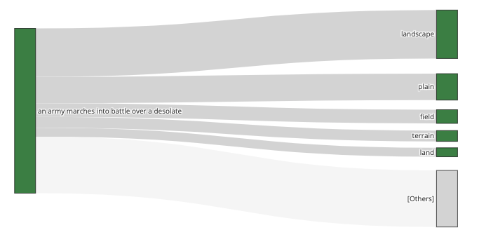

The prompt is the code
Reading code is harder than writing code => Checking the generated code defeats its purpose => The prompt is the code
Alejandro Panza | Rosario | Argentina
Reading code is harder than writing code => Checking the generated code defeats its purpose => The prompt is the code

In 2018 I started working on a web page that would allow quantum laboratories partnered with Microsoft to share experimental results and insights. I got a rare opportunity to glance at hundreds of mysterious and very classified...
Continue Reading »If you shoot ChatGPT with the same prompt twice, you will get different answers. That is by design and probably well intended, but it makes OpenAI unaccountable. Since you cannot reproduce a past response, you cannot convince others that you got a certain answer.
Continue Reading »It is often said that an AI like ChatGPT can't produce original material or original knowledge. The reason given is that it feeds from already existing material or knowledge that has been already produced ...
Continue Reading »
The text completion model under ChatGPT is optimized for one thing. Given a text, generate the word that comes next (actually, the next token). Under the hood, every time ChatGPT generates the continuation of a text, it offers several options, each accompanied by a probability of how likely it is to come ...
Continue Reading »At the height of an empire, which name is long lost in the sands of time, the sophistication and refinements of its court were unparalleled. Hundred of poets devoted their lives to weaving the most complex verses together...
Continue Reading »

In elementary school I told a friend that every day I was woken up by a sunbeam that filtered through the window and landed right on my eyes. Of course, it was a lie. It happened only once and at that moment I felt the need to make my story more exciting. The Sun takes a different path every day. The first day of October at 9:00 am the sunbeam passed trough my bed and the first of September the sunbeam went through my bed table.
Since the shadow of the window moves as the hours goes by and every day it goes trough a different path it is possible to make a clock. It is the basic principle of every sundial.
How hard could it be to make a sundial?
Continue Reading »Want to understand how to get some bitcoin? try this toy coin »

Tired of having to avoid parallel fourths ? try the voice leading bot » or play auto arranged chords »

Visualization of election results by voting location, for the 2019 general elections in Rosario, Argentina.
View election map (in Spanish) »